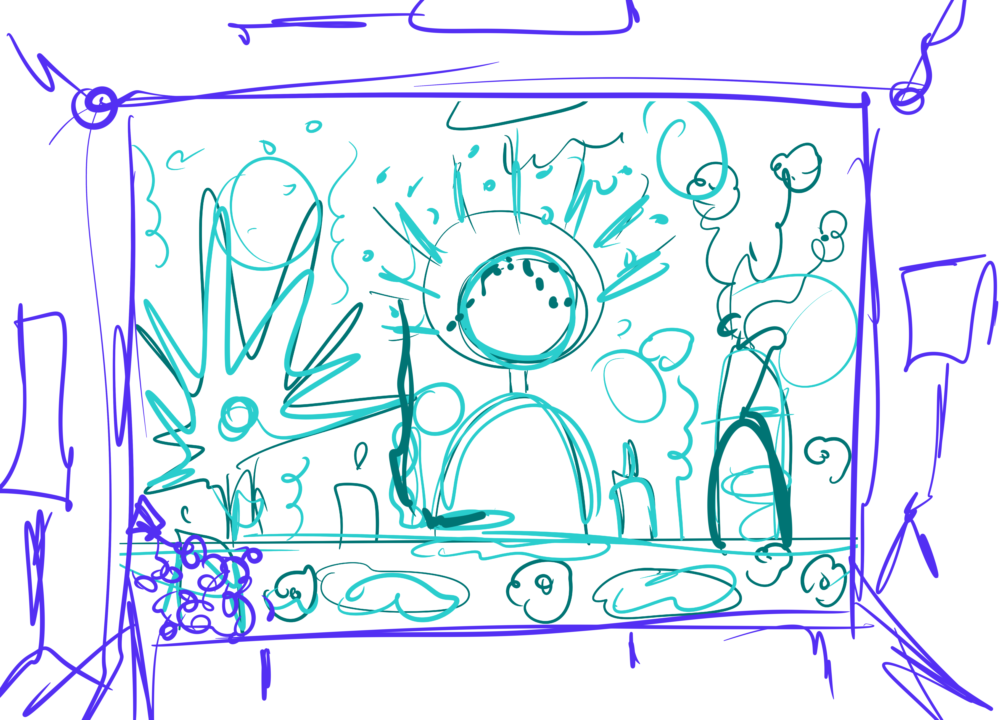
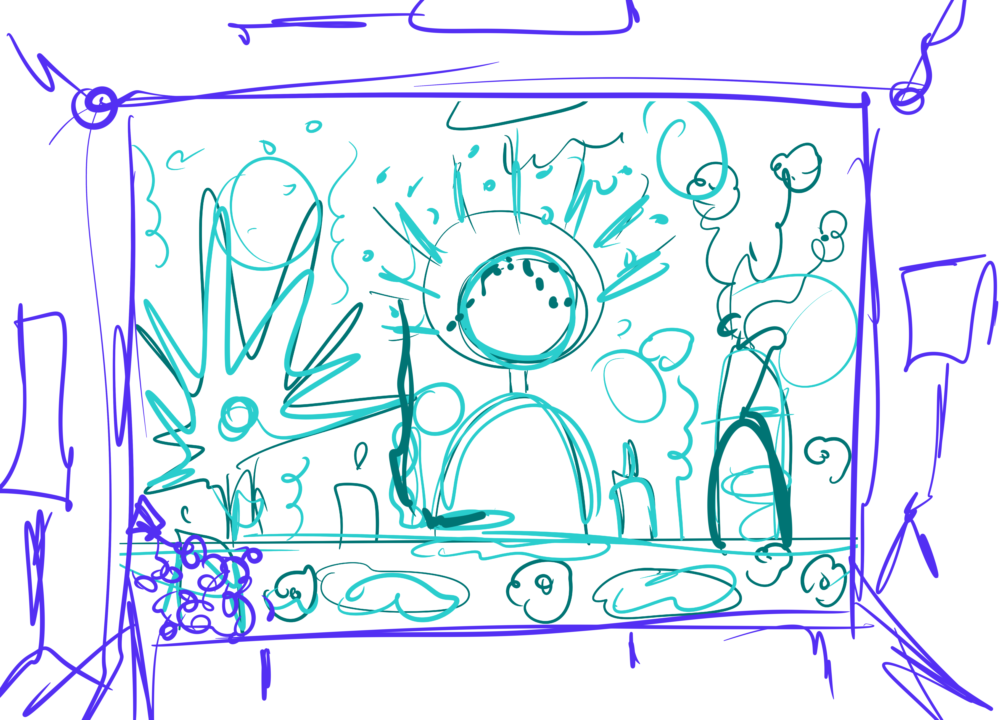
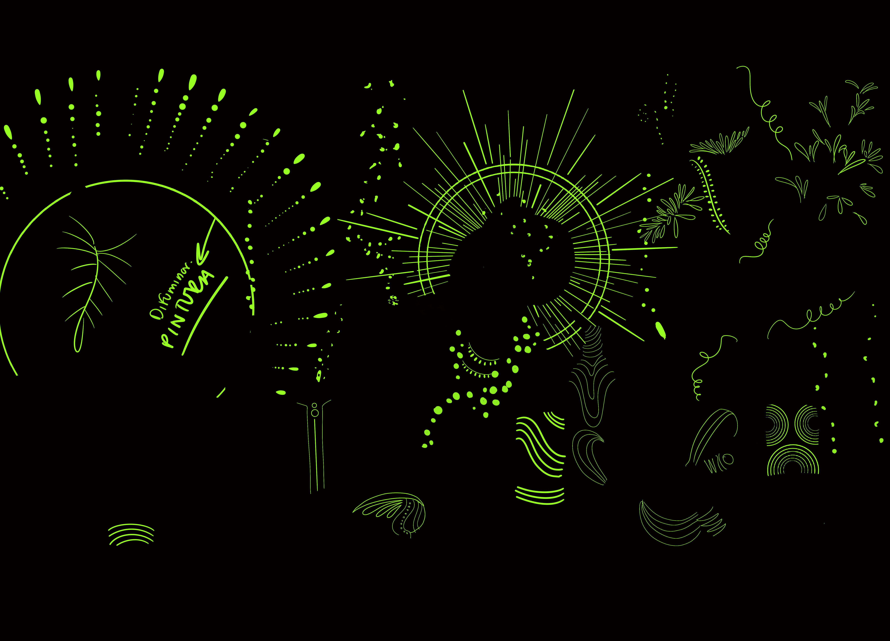
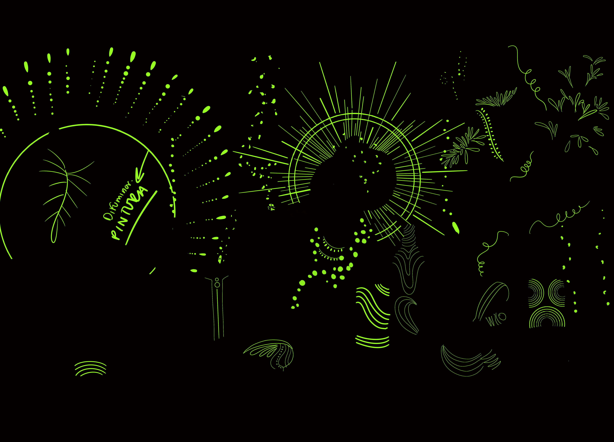

Paola Alvarado es una mujer negra nacida en la ciudad de Cali y residente del oriente de la ciudad. Se destaca como activista social, feminista negra y defensora de los derechos de mujeres, niñas y niños que viven con VIH.
Además, se autodenomina como pitonisa y ejerce practicas espirituales como la lectura del tabaco, habilidad que heredó de su madre y abuela, quienes dominaban la lectura del chocolate y el tabaco.
 



 

MOODBOARD
BOCETO
FOTOGRAFÍA
DESCRIPCIÓN
AUREOLA
INTERVENCIÓN
En la construcción fotográfica, se destacó la importancia de las velas, especialmente las blancas, así como el protagonismo del velón siete potencias, que refleja el vínculo espiritual de Paola con la influencia de la cultura africana.
Además, se consideraron las plantas medicinales ya que tienen una conexión profunda con las bendiciones, conocimientos sagrados y curativos presentes en la naturaleza, creando un cordón umbilical que las une a todas por igual.
Para asegurar una buena distribución y organización efectiva del espacio, se tuvo en cuenta la intención y el protagonismo de cada objeto, así como su significado e importancia dentro del contexto visual. Para ello fue necesario realizar un boceto, o como prefiero llamarlo, un "mamarracho", para explorar los primeros trazos libres, juguetones e ingenuos sobre cómo se podía disponer del espacio de manera que permitiera la máxima libertad creativa y desarrollo constructivo.
Durante la entrevista con Paola, se descubrieron hallazgos importantes acerca de la armonización de espacios sagrados y la realización de rituales destinados a abrir caminos o limpiar energías negativas.
Expresó su afinidad por el color dorado, asociándolo con el poder, el sol, la vitalidad, la energía positiva y el renacer. También destacó la importancia del tabaco como su principal herramienta de trabajo, ya que materializa los sentimientos, afectos y el futuro de las personas que la consultan a través de las cenizas, conocida como "florecimiento".
Se ha tomado en consideración el significado y el uso simbólico del chontaduro y la flor del plátano como elementos fundamentales en la representación cultural y espiritual de las comunidades negras. Estas frutas no solo son pilares de la alimentación y gastronomía tradicional, sino que también desempeñan un papel crucial como fuentes de ingreso económico.
La aureola diseñada para la figura de la pitonisa Paola, fue concebida con el objetivo de capturar el resplandor y la divinidad que el color dorado evoca, una reminiscencia de las representaciones clásicas de vírgenes y santos en el arte católico. Sin embargo, esta reinterpretación en un contexto afro centrado enfatiza y celebra la importancia de la divinidad y la espiritualidad en las mujeres negras, resaltando cómo el color dorado no solo armoniza con los tonos de piel, sino que también realza y enriquece de manera simbólica y estética la imagen.
Se intervinieron estratégicamente lugares vacíos para ambientar el espacio y añadir un toque de misticismo. También se agregaron detalles clave en los chontaduros, la flor del plátano, las velas, hierbas y flores en puntos estratégicos para resaltar su brillo, así como la representación del humo y la luz de las velas como luminiscencias y puntos de colores vivos.
Se optó por luces cálidas y colores de fondo que resaltaran de manera adecuada los rasgos faciales y naturales, creando un ambiente acogedor que complementa la identidad e historia de cada mujer retratada.

Una de las razones principales que llevaron a elegir esta fotografía entre la selección, fue la intensidad de su mirada, que refleja una expresión dominante, segura y profundamente hermosa. La gestualidad de su rostro comunica una gran contemplación y análisis que no pasa desapercibida para ella.


La fotografía de Paola captura visual no solo representa su presencia física, sino también su espiritualidad, feminidad, empoderamiento e interpretación del universo y su rol como activista social y pitonisa.
La elección del fondo azul y el uso estratégico de elementos como velas, hierbas medicinales y símbolos espirituales como el velón siete potencias y el palo santo, subrayan su vínculo con la tradición yoruba y su capacidad para canalizar energías positivas y sanadoras a través de la lectura del tabaco, también como la aureola dorada recoge el poder y magnificencia que representa para ella.